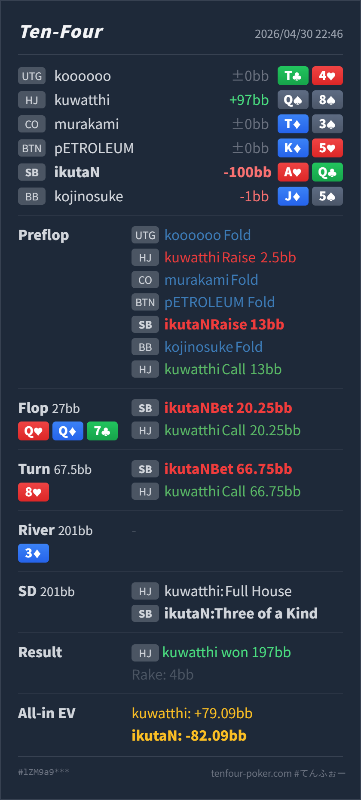

Preflop
良いA♥Q♣ は value 3bet に入る強い hand です。
GTO基準で、Hero の preflop 3bet と turn で stack off する発想自体は大きなミスではありません。むしろ HJ が Q8s で SB の大きめ 3bet に call している点がかなり広すぎます。改善点は flop Q♥ Q♦ 7♣ で 75% pot を打ったところです。Hero はかなり強い trips ですが、dry な paired board で大きく打つと、相手の続行レンジが Qx / full house / 強めの pocket pair に寄り、turn 以降が高分散になります。
ikutaN SB A♥ Q♣Q♠ 8♠Q♥ Q♦ 7♣ / 8♥ / 3♦A♥Q♣ 3bet は良い。turn shove も as played では自然寄り。QQ7 のような dry paired board では、小さめ c-bet か check を混ぜて、相手の弱い pocket pair や broadway を残す。Q8s preflop call は標準から外れているので、結果だけで Hero の stack-off を悪く見すぎない。ikutaN SB A♥ Q♣Q♠ 8♠2.5BB, CO fold, BTN fold, SB Hero raise 13BB, BB fold, HJ callQ♥ Q♦ 7♣ / 8♥ / 3♦27BB, SB Hero bet 20.25BB, HJ call67.5BB, SB Hero bet 66.75BB all-in, HJ call3♦197BB, rake 4BB
良いA♥Q♣ は value 3bet に入る強い hand です。
Q♥ Q♦ 7♣bet は良い / size は大きい
Hero は trips top kicker で、かなり上位の value hand です。
8♥as played では自然A♥Q♣ はまだ Hero range の上側ですが、相手の call range だけを見ると絶対的な nuts ではありません。
結果論に寄せすぎない
Hero は three of a kind で、full house には負けます。
| 論点 | その場で置いた見立て | どこがズレやすいか | 次回の基準 |
|---|---|---|---|
| trips top kicker の価値 | AQ で trips なので、大きく打ってそのまま取り切れそう | hand 自体は非常に強いですが、大きい flop bet に call された後は、相手レンジが Qx と full house 寄りになります。弱い pocket pair から広く取る目的とは少しズレます。 | dry paired board の強い trips は、まず小さく広く取る。大きく打つなら、相手の続行レンジが濃くなる前提で見る |
| 非標準な相手ハンドの扱い | Q8s に負けたので turn shove が悪かったように見える | Q8s の 3bet call 自体がかなり loose です。相手が広すぎるなら Hero の value は増えますが、hit した一部コンボに負ける結果も混ざります。 | 相手の実ハンド1コンボで基準を動かさない。相手が広いなら value は厚く、ただし flop は小さく長く取る |
| ストリート | その時点の見え方 | 実ハンドの位置づけ | 評価 | その場の一手 |
|---|---|---|---|---|
| Preflop | HJ 2.5BB open に対して SB は OOP なので、3bet は大きめになります。 | A♥Q♣ は value 3bet に入る強い hand です。 | 良い | 13BB はやや大きめですが許容範囲です。標準は 11-12.5BB 付近でも十分です。 |
Flop Q♥ Q♦ 7♣ | SB 3bettor は overpair と強い Qx を持ち、レンジ優位があります。ただし board はかなり static で、draw が少ないです。 | Hero は trips top kicker で、かなり上位の value hand です。 | bet は良い / size は大きい | 1/3 pot 前後の小さめ c-bet、または一部 check が扱いやすいです。75% pot は相手の続行を強い range に寄せます。 |
Turn 8♥ | HJ が大きい flop bet に call した後なので、相手には Qx、77、一部 pocket pair が濃く残ります。88 や loose な Q8s はここで full house になります。 | A♥Q♣ はまだ Hero range の上側ですが、相手の call range だけを見ると絶対的な nuts ではありません。 | as played では自然 | flop で大きく打って SPR が約1になった後は、shove で問題ありません。改善するなら turn ではなく flop sizing です。 |
| River / Showdown | all-in 後に 3♦ が落ち、HJ の Q8s が full house のまま勝ちました。 | Hero は three of a kind で、full house には負けます。 | 結果論に寄せすぎない | この負け方は相手の loose call と turn hit の結果です。Hero 側の修正点は、stack-off拒否ではなく flop の pot 作りです。 |
AQs の SB 3bet は良いです。HJ の Q8s call は標準よりかなり広いので、ここは結果で反省しすぎない。QQ7 のような dry paired board では、強い trips でもいきなり大きく打つ必要は薄いです。小さく打つほど、相手の 99-JJ や弱い broadway を残せます。AQ trips top kicker は基本的に stack-off してよいです。改善点は「turn で降りる」ではなく「flop で相手レンジを狭めすぎない」です。Q8s まで 3bet call するなら、Hero の AQ はかなり強い value になります。このタイプには preflop 3bet と postflop value は厚めでよいです。Qx 以上を残しやすいです。loose caller 相手でも、まず小さく打って dominated hand を残す方が取り切りやすい場面が多いです。